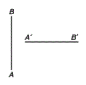
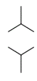

Беседа 3304 от 3877 · Беинса Дуно
Обработване
„Отче наш“
Имате ли тема? („Имаме.“) Четете.
Прочете се темата „Разлика между животни и растения.“
„Фир-фюр-фен“
За втори път пишете върху една свободна тема, която има практическо приложение, една тема, която ще приложите.
Мисъл, която не обработва човешкия мозък, не ползва човека. Единствената малка собственост, която човек има, то е човешкият мозък, в който човек посява по нещо, от което ще излезе нещо. Запример, ако разглеждате човешкото лице, човешкото чело, то е една малка градина, в която се посяват доста дръвчета. Някои от тях плод не дават, още не са започнали да раждат. Вземете музикалното чувство в човека. То е едно плодно дърво – по едно дърво има посадено от двете страни на човешкото чело. Колцина от вас може да продадете една музикална ябълка? Аз бих желал да купя. Какво бихте продали от музиката? Че човешкият говор се дължи на музикалното чувство.
Всичките спорове в света стават от един недоимък. Всичките хора се оплакват, че не се обхождат добре с тях. Вие мислите за говора като изтичане, да изтече нещо. То е смешно положение. Така е безпредметно. Силата на човека седи в обработването на ума. Вземете някой човек, който е милостив, има милосърдие. Милосърдието е дърво, то ражда нещо.

Вие някой път искате да станете щастливи в света. Нямате една ясна представа. Казвате: „Искам да бъда добър човек.“ Какво разбирате под думите добър човек? Срещаш един богат човек, ти му попросиш, той извади едно малко медно или сребърно търкалце, златно много рядко дават, и ти даде. Има медни и сребърни пари. Като ти даде пари, вие считате това благородно деяние. Ти ме срещнеш, искаш нещо от мене, аз се наведа и ти дам едно камъче. Каква разлика има между парите и камъчето? Казваш: „Камъче ли ми даваш?“ Ако ти дам един скъпоценен камък, който струва много повече от една медна монета, кое е по-хубаво?
За да бъде човек добродетелен, той трябва да бъде художник. Той моделира своето лице. Добрият човек работи над себе си. Има степени на добродетелта. Вие казвате: „Както Господ е направил света.“ Тази идея – както Господ е направил света – то е едно статическо положение. Казвам: както художникът е направил една картина. Аз няма какво да се меся в една картина. Може да кажа, че е добра или не, но какво мога да направя на картината? Работата с човешкия живот седи малко по-другояче. Ти си художник, който имаш достатъчно платна, бои, четки. Имате цялата природа да рисувате. Вие сте ученик, трябва да рисувате. Казвате: „Както Господ даде.“ Какво може да ти даде Господ, когато носиш платната, четките, боите, и не работиш.
Фотографията кога е дошла на земята? Кога хората са започнали да фотографират? Може някой от вас да проучи малко историята на фотографията. Човек най-първо е започнал да фотографира. Очите, това са апарати. Каквото вижда, той го фотографира. Трупали се, трупали се тогаз впечатления, че иска най-първо да се освободи от тях, от картините си. Отпосле той започнал да работи, изкуството се е явило много по-късно. Фотографията е един закон. Природата го изучава. Много бързо прави това светлината в човешкия мозък. Докато човек се е учил да рисува, колко време му е взело? Той може да изучава тия картини, напластени в неговия мозък.
Отвън като разглеждаме хората – щастието им зависи от онова, което те са изработили. Харесваш един човек заради туй, което той представя. Харесваш или главата му, или рамената му, или кръста му, или краката му, или ръцете му, или пък пръстите му – нещо някъде харесваш. В човека все трябва да има нещо, което да обичаш: или очите му, или веждите му. Някои харесват устата, както е направена, някои харесват гънките на устата.
Сега, ако дойдете до животинския живот, животните, и те има нещо, което харесват, и те имат обич. Едно животно, като види друго, харесва му нещо. Вие харесвате някой човек, и не знаете какво харесвате. Вие казвате: „Много добър човек, много справедлив, много спретнат.“ Сега каква разлика има между добър, справедлив и спретнат – Д., С., С.? Вече законът на доброто има към какво да се стреми. Разликата между добротата и справедливостта какво е? Добър ако си, все трябва да дадеш нещо от себе си. Справедливият не е вече за даването. Виждате кому какво се пада. Да разпределиш. Може да си справедлив, и някой път може да вземеш голям дял за себе си. Майката често раздава на децата си вкъщи. Има майки, които имат десетина деца, че на всяко дете майката даде по една ябълка и казва всяко да ѝ даде половината ябълка. Те са десет половини, пет ябълки. На децата пет ябълки и на майката пет ябълки. Как мислите, тази справедливост е отлична.
Майката ги учи на какво? Майката ги учи на щедрост. Щ-то какво означава? Щ-то, това е човешката ръка. Трите пръста вземат. Трите пръста за децата, пък двата за нея. Материални работи. Там, дето ръката работи, много малко дава, повече взема. Направете едно малко наблюдение: колко пъти ще дадете нещо от джоба и колко пъти ще турите нещо в джоба си. Даже като изчистиш носа, това, което вземаш от носа, сопола, пак го туряш в джоба. Хората са много щедри, всичко турят в джоба. Някой плод в джоба го туряте. Хляб – пак в джоба го туряте. Имаме толкоз много джобове: вътрешни, външни, джобове на палтото, на жилетката.
Животът ни е станал скучен, понеже ние искаме нещата да стават произволно. Някой път се среща някой, който казва, че няма какво да работи. Трябва да идеш на нивата да работиш. Малко пространство има в мозъка, което трябва да се обработи. Само в този музикален център на човека природата е турила едно пиано от двайсет и пет хиляди клавиши за свирене. Един голям орган е турен. Доброто, както си го представяте, то е цял един свят. Доброто е най-красивият свят в човека. Доброто и злото са два противоположни свята. Дървото на познанието доброто и злото, половината от това дърво раждаше добри плодове, половината – лоши плодове. Ева яде от лошите плодове. Дървото беше разпределено: половината лоши плодове, половината добри плодове. Казвате: „Как така да бъде?“ Много естествено, много проста работа. Не ви ли стига умът? Ашладисано дърво било. Едната страна била дренки, другата сливи. Това е за разяснение. Казвам, че туй дърво било ашладисано.

Философията другояче седи. Под думите Бог създал двете светила, двете големи тела – едното е слънцето, другото е месечината. Те са два извора, от които човек възприема енергия. Месечината въздейства изобщо на умствения живот. Умът ни не се нуждае от толкоз енергия, както човешкото сърце. Човешкото сърце, човешкото тяло се нуждаят от повече енергия от слънцето. Тази енергия трябва да се трансформира. Как ще обясните? Слънцето, което е повече от един и половина милиона пъти по-голямо от земята, не причинява приливите, но месечината, която е по-малка, тя вдига шейсет стъпки водата. А слънцето не може да я вдига, не може да прави приливите на земята. Много хора има, лунатици, които при пълнолуние стават и често ходят по покривите. Гледаш, този човек по тенекиите върви. Ако не го събудиш, върви по покрива, по края. Ако го събудиш, ще падне веднага, може да се убие. Лунатиците не са толкова тежки, олекват, изгубват своята тежест. Ако слънцето би привличало, тогава вие щяхте да станете по-тежки. Когато мислите дойдат под слънчевото влияние, те стават по-тежки. Когато са под влиянието на месечината, са леки. Понеже месечината е лека в сравнение със земята, затова тя не упражнява такова голямо влияние.
Та казвам, месечината играе една важна рол във вашия умствен живот. Ако вие сте под нейно влияние, показва, че постоянно трябва да стават промени във вас. Ако ние живеем под светлината на месечината, какви комари ще ни хапят? За комарите няма условия. Но благодарение на добрината на слънцето всички тия комари са дошли. Желанията се раждат от слънцето, а пък мислите се раждат от месечината. Бихте ли проверили туй?
Да допуснем, че вие живеете между два съседа, единият богат, пък другият беден. Кой от двамата може да ви причини по-голямо добро, богатият или сиромахът? Кой от двамата може да ви причини по-голямо добро и кой може да ви причини по-голямо зло? Сега във вас седи мисълта: „Богатият.“ Вярно е до известна степен. Богатият може да ви направи голямо добро, но може да ви направи и голямо зло. Ако само го обидите, той ще се справи с вас, както разбира. Какво би ви направил сиромахът? Сиромахът може да ви вземе малко от имането, което имате. Но богатият с вас може да се справи много лесно. Казвам, в дадения случай вие живеете между два съседа: единият е слънцето, другият е месечината. Кой ви прави по-големи добрини? Слънцето. Кой прави по-големи пакости? Пак слънцето. Всичките пакости на земята все идат от слънцето и всичките добрини идат пак от слънцето. Ако стане някъде пожар, виновно е слънцето. Ако се родят плодове, похвалата е на слънцето.
Питам, щом Господ е направил месечината, какво трябва да направите с нея? Знаете ли как да завържете приятелство с месечината? Вие като срещнете месечината, тя ви казва: „Не ви трябват толкова дървета, да ги посаждаш, да се мъчиш.“ Месечината казва: „Не ти трябва толкова да ядеш.“ „Малко, не трябва много“, казва месечината. Щом дойдеш до слънцето, всичко трябва вече, щом дойдеш до слънцето, трябва ти един дъждобран. Слънцето е толкоз добро, че хората се бранят от него с дъждобран или още как го казвате? Омбрела, чадър. Да не ви се вижда чудно това. Част от слънчевата енергия трябва да мине през месечината, да дойде до нас. Тя е непоносима иначе. Месечината е един трансформатор на слънчевата енергия. Ние трябва да възприемем тази енергия, за да стане достъпна за обработване на нашия ум. Ако сте приятели с месечината, много малко ще боледувате. Когато развалите вашите отношения с месечината, болестите идат много често. Щом човек се сприятели с месечината, болестите идат малко. Всичко, което в природата съществува, не е един произвол. Мислите ли, че животът е произволен?
Казвате: „Човек да бъде щастлив.“ Но за да бъде човек щастлив, знаете ли колко знание трябва? Най-първо, щастието, като ти го дадат, трябва да знаеш да го пазиш. Да допуснем, че ти е дадено едно хубаво ухо, даден ти е един хубав глас. Ако не знаеш да пазиш ухото си, ако не знаеш да пазиш гласа си, ще изгубиш способността за пеенето и за говоренето. Вземете процеса на дишането. Ако вие не дишате добре, дробовете се развалят. Или по някой път в човека се заражда едно желание да събира. В слепоочната част на главата се намира един център – когато е развит в човека, той събира материални работи. Ако наблюдавате ония хора, у които туй чувство е развито, от френологично гледище, ще видите, че главата е развита в слепоочната част. Запример така силно е развита главата у катерицата. Катерицата, като намери жълъди или кестени, или орехи за ядене – един орех изяде, другите орехи ги събира и ги скрива някъде, за втори път да има. Туй чувство в нея е развито. Вземете една кокошка. Цяла крина жито ѝ дайте. Тя е много щедра. Разпръсва и като се наяде, казва: „И за другите да има.“ Че утре може да гладува, не мисли. Казва: „Ще даде Господ.“
Та по някой път и вие имате тия чувства. Намерите някъде едно парче хляб, хвърлите го. Във всеобщата война срещам един аристократ българин със своята дажба хляб. Не му дали цял самун, но три четвърти: едното парче за него, другото за жена му, третото за детето му. При едно богато състояние той би носил три хляба, сега носи три четвърти от самуна – по една четвърт на човек. Направи ми впечатление как той носеше хляба. Върви и го прегърнал. Казва: „Има да живеем, аз, жена ми и детето ми. Дано не ни лишават и от тази малка дажба.“
Но казвам, когато туй чувство се развие в човека, образува се един навик и той става скържав, че всичко пести. Той пести даже и въздуха, че не диша. Природата има един процес, който не търпи пестеливост. Ти ще дишаш дълбоко, големи дажби ти е дала тя. Щом вие вземате повече от двайсет обеда на минута, вие не сте здрав човек, алчността е минала своя предел и то е вече едно болезнено състояние. Тези хора, които много бързо дишат, не са здрави. То е скържавост, бързото дишане. Вземат въздух и този въздух не го обработват, не го задържат в себе си. Той влиза и излиза. Изтича тази енергия. Най първо, човек за да бъде здрав, въздухът, който влиза, трябва да направи една обмяна. Този процес на дишането трябва да е правилен. Вие не сте дошли до правилния процес.
Колко елемента има във въздуха? Във въздуха има свободен кислород, азот. Водород има само в горните пластове. Има и въглероден двуокис. Кислородът е потребен. Той ще даде активност, ще образува горенето. То е начин за преустройване, пречистване на човешката кръв. Азотът дава устой на човешкия организъм. Ако твоята мисъл нямаше азот, тя няма да бъде устойчива. Ако нямаше достатъчно въглерод, тогава растенето няма да става правилно. Ако изгубиш елемента на водорода, тогава пластичност няма да имаш в тялото си. Под думата кислород ние разбираме онзи свещен огън, който е необходим за живота. Кислородът е носител, проводник на свещения огън. Но докато дойдете до свещения огън, ще се минат ред години. Да знаете как да използвате този свещен огън.
Даже с вашия език разваляте свещения огън. Ако кажете някому някоя горчива дума – може да направим опит – ако кажете една обидна дума, веднага се повишава температурата на човека. Всеки ден думите, които изказвате, те или повишават, или понижават температурата във вас. А пък там, дето става повишение или понижение на температурата, има една опасност, втвърдяване става на капилярните съдове, на кръвоносните съдове. При минаването от едно топло в студено състояние организмът става по-твърд. Тази смяна до известна степен е приятна, но после става втвърдяване.
Казвам, необходима е правата мисъл. Не трябва да се изменя състоянието на свещения огън. Ни най-малко не трябва да се повишава температурата. Ако се повиши, много малко трябва да се повиши. Много голяма температура на човека не е потребна. Каква е нормалната температура? Трийсет и шест и половина, трийсет и седем – десет. Туй число, трийсет и седем, е много активно, динамично, единица има. Туй течение е измерено. Всеки един от вас може да направи измерване на онази истинската температура, която има. Човек трябва да изучава температурата си. Интересно е да знае каква е точната му температура. Да имате един много точен термометър и когато имате най-хубавото разположение, да измерите температурата си. Турете термометъра под мишницата си и вижте каква е температурата ви. Когато имате най-лошото състояние, пак турете термометъра и отбележете. Ще направите една таблица. Ще измерите температурата си и когато имате едно средно състояние. Имате едно весело състояние – пак измерете. Ще видите, че температурата се различава. Ако някой [от вас] се нуждае от начини, дадени за вашата температура, можете доброволно да измерите. Триста шейсет и пет дена в годината ако измервате по три пъти на ден, ако правите наблюдения сутрин, обед и вечер, вас ще ви тръгне. Ако бяхте правили няколко години научни изследвания, да измервате температурата си, доста големи капацитети щяхте да бъдете. Щяхте да се домогнете до едно знание, което щеше да ви бъде полезно.
Сега запример вие не знаете, когато човек е музикално настроен, каква е температурата му. Или, когато човек е гладен, не знаете каква е температурата му. Или, когато е сит, не знаете каква е температурата му. Или, когато някой път е песимист, обезсмислил се животът му, и тогава температурата се различава. Ще се изисква една школа за регулиране, за да знаете как да се справите с тялото си. Запример да знаете как да употребите ушите си. Минавате някъде, слушате един водопад или изворче тече. Ако сте музикант, турете ухото си и послушайте. Слушате този шум и ви е приятен. Вие може да слушате шума на потока, но ни най-малко не спирате да видите какъв е теренът, по който тече този извор. Или някъде минавате, усещате ухаенето на цветята или на някои растения. Ни най-малко не се спирате да видите каква е обстановката, да видите при какви условия тия растения растат. Приятно ви е наглед.
Вие мислите, че човешкото око е много красиво. Много страшно е човешкото око. Казвате, че човешкото око се смее. Никак не се смее. Смехът произтича от клепачите, както се свиват тия мускули. Ако се отвори окото, никакъв смях няма да забележите. То е страшно. Казвам, при смеха или при веселостта веднага клепачите се свиват. Тия мускули са, които дават тази украса. Може би окото се смее тогава. Да кажем, вие се учудвате. Как се учудвате? Дайте ми един израз на учудване. Някой плаче. Как плачете? Както е построено, да бъде отворено окото. От окото зависи какво е състоянието на човека. Добрите хора имат един строеж на очите, другояче са построени клепките на алчните хора, другояче са на умните хора. На един умен човек очите се различават, разтворът е друг. На някои хора очите са отворени. Вземете очите в кукумявката – очите са отворени. От много ум ли е отворено окото? Понеже трябва да си дебне храната, очите трябва да бъдат отворени вечерно време, за да може да вижда. Тази малката птичка някъде кацнала или някое малко животно, да може да го види в тъмнината.
Някои от вас носите много притиснати вашите бърни. Не че то е ваш характер, но ред поколения са живели с притиснати устни. Някои носите сплеснати носове. То е защото ред поколения са живели така. Тепърва трябва като художници да моделирате устата си, да моделирате носа си, да моделирате очите си. Да кажем, видиш яденето, веднага се измени изразът ти. Веднъж забелязах, една софийска дама влезе в една колбасница. Тя беше много красива, хубаво облечена. Спрях се да видя какво ще прави. Като стигна до колбасите, като си отвори очите като котарак. Аз имам един начин да рисувам основните черти. Нарисувах ги. След като ѝ отрязаха половин кило и тя го тури в чантата си, придоби пак онова благородство. По-напред като котарак гледаше. Като ѝ дадоха колбасите, измени се изразът – като котката, като хване мишката. Рекох си, тази дама не е още благородна, както се поставя отвън.
Запример вие сега седите и минавате, че имате морален устой. Представете си, че вие сте беден, минавате някъде и една каса отворена, със злато, лъщи. Спирате се, погледнете. Преживявате нещо като тази дама. Значи, като минеш покрай касата, да ги считаш като цветове, да ги погледаш, да ги погледаш малко и после да си тръгнеш по пътя. Тези пари са като цветове, нацъфтели в касата. Ако си позволиш да откъснеш някое цвете, ще те хванат за престъпник. Нямаш право да късаш. То е цвят, цъфнал в касата. Можеш само тъй да го помиришеш малко отблизо. Даже и тогава ще те попитат защо си турил носа близо до цветето.
Та ние на земята живеем не в един свободен свят. Тепърва трябва да се освободи светът. Казват някои хора, че живеят свободно. В този ред свобода няма, ние сме в ред ограничения. […] Ние мислим още, че сме свободни. Свободен е човек – всичките каси да са отворени, да минават хората и никой да се не съмнява, че е взел нещо. Няма защо да носиш пари. Когато една птица хвърка из въздуха, колко пари взема със себе си? Или когато една риба тръгне в морето да плава, какво взема със себе си? Сега във вас седи мисълта, че без пари не може. Ако ми кажете, че без въздух не може, разбирам, една необходимост е. После, и без вода не може. Но де е необходимостта по-голяма? При въздуха необходимостта е по-голяма. Човек без въздух не може да издържа дълго време. Ако за една минута те спрат да дишаш, веднага ще загубиш своето съзнание. За вода можеш да траеш няколко часа – пет, шест и десет часа можеш без вода.
Та казвам, ние се нуждаем от пари, но от много малко пари се нуждаем. Ти се нуждаеш от злато. Колко злато трябва да имаш в кръвта си? Външното богатство на човека се обуславя от богатството, което е в кръвта. Ти ще бъдеш толкоз богат, колкото злато имаш в своята кръв. Ти ще бъдеш толкоз умен, колкото азот имаш в мисълта си, в мозъка си. Искате някой път да бъдете учени хора, мъдри хора. Азот трябва да имате, но не външния елемент. Вие се нуждаете от кислород, но един органически кислород има, който е в човешката кръв. Има един органически водород, който е в кръвта, в тялото. Има и един органически въглерод в действие. Другите са в едно статическо положение.
Та казвам, има динамика на човешкия ум. Когато говорим, че човек трябва да мисли, разбираме – всички ония елементи, които са в динамично състояние, тях може да ги използва. Онези, които са в статично положение, много мъчно може да ги използваме. С кой човек по-лесно можеш да се споразумееш, с живия или с мъртвия? В статично положение нещата са в спящо състояние. Един предмет, който се намира в статично положение, той се занимава само със себе си, той не мисли за никого другиго. Колко време ще ти вземе да убедиш умрелия да се върне назад? Колко време ще ти вземе да срещнеш един богаташ, който излязъл на разходка, колко време ще ти вземе да го убедиш да се върне вкъщи, да ти услужи? Той ще ти каже: „Ще почакаш, ще се върна след няколко дена.“ Няколко дена трябва да почакаш.
Сега вие се намирате в един неуреден свят и мислите, че можете да бъдете щастливи, може да бъдете богати. Верни са тия работи. Но за да бъдем щастливи, за да бъдем богати, не сме само ние факторите. Има хиляди хора, които трябва едновременно да вървим и да съгласуваме нашия характер с техните, да съгласуваме нашите постъпки с техните. Защото животът зависи от хармоничното съгласуване на мислите, на техните чувства и на техните постъпки.
Да кажем, вие сега се безпокоите какъв ще бъде бъдещият живот. Ние се безпокоим за нищо и никакво. Нас, които ни е страх от смъртта… Кой може да се избави от смъртта? Отлагаш година, две, три, четири, пет, шест, седем, осем, девет, десет, двайсет, трийсет, четирийсет, петдесет, шейсет години, но тя пак ще дойде. Дойде, кажеш: „Отложѝ.“ Тя отложи. Ще ви приведа един анекдот за една осемдесет и пет годишна негърка. Дотегнало ѝ да живее и започнала да се моли да я вземат, да прати някой дух, някой ангел, да я вземат, да се освободи от земята. До тази негърка имало една духовна академия със студенти. Няколко души студенти чули как тя се моли. Американците обичат шегите и те решили да се пошегуват. Трима души студенти се преобличат и тримата отиват и хлопат. Тя пита: „Кой хлопа?“ Казват: „Архангел Михаил. Бог чу твоята молитва и ме прати да ти взема душата.“ Тя затворила вратата и казала: „Кажете му, че я няма вкъщи.“
Човек е много смешен. В обичта си към живота, когато дойде да умира, казва: „Господ да ми даде поне десет години.“ Лекарят пипа пулса и констатира, че не може. Казва: „Поне пет години.“ И пет години не може. „Поне да ми даде една година.“ Лекарят констатира, че и една година не може. „Поне единайсет месеца.“ Че десет месеца, че девет месеца, че осем, че седем. Дойде до един месец, дойде до седмица и най-после – до един ден. Най-после, дойде до един час, казва: „Да имам още един час да живея, да си уредя работите.“ От десет години дойде до един час. И него не му дават. Много мъчно е да речеш да продължиш живота. Не можеш да го продължиш. Като се съкрати животът, не може [да го продължиш] нито минута. Точно на минутата ще се облечеш и хайде.
Казвам, живота, който имате, трябва да го използвате, трябва добре да обработвате мозъка си. Сега по някой път вие се безпокоите. Какво ви дава повод да се безпокоите? Виждате, защо да не бъдете толкова умни – вземете съвременното модерно радио. Туй радио може да го нагласяваш да ти говори тихо и много силно. Има две колелета, ще ги завъртиш. Като завъртиш едното, започва да кряска. Не че радиото иска да кряска, но тъй е направено. Ако го отвориш, кряска. Ако го затвориш, тихо говори. Човек някой път кряска. Казва: „Лош човек съм.“ Ни най-малко не си лош, но ти си отвъртял радиото повече. Позатвори го малко. После, радиото има и контакт. Някой път не искаш да слушаш. Извадѝ контакта, спри радиото. Какво ще стане? Нищо няма да стане. После, искаш да слушаш, пак турѝ контакта, нагласявай го. В себе си не се безпокойте.
Да допуснем, че някой те обича. Аз как гледам? Той отвъртял силно радиото, изкряскало. Като слушам някой път по радиото, говорят англичани, но не мязат на англичани – един груб глас. И германецът, като пусне радиото, не мяза на германец. И българинът, като пусне радиото, не мяза на българин. Като пуснат силно радиото, всички кряскат, мязат си на общо основание. Като завъртиш радиото хубаво, и англичанинът говори много хубаво, и французинът говори много мекичко, и българинът.
Първото нещо е: икономисвайте енергията. Никога не иждивявайте повече енергия, не отвъртайте колелото, не го затваряйте.
Мисълта, която искам да остане е: обработвайте мозъка си. Цялата повърхност на мозъка трябва да се обработва. Всяка година известна част трябва да се обработва. Ако сега ви дадат пет години на разположение и ви накарат да заострите пръстите си, как ще го направите? Да кажем, че пръстите ви са квадратни – да ги направите елипсовидни, да развиете повече въображение. Острината на първия пръст е на място. Но ако тази острина е на втория пръст, не е на място, ако острината влезе на [втория] пръст, този човек и в своята справедливост не е справедлив, изплъзва се. За да бъдем справедливи, пръстът трябва да бъде широк, не заострен. Ако дойдем до третия пръст, до безименния пръст, той трябва да бъде широк. Ако е заострен, той лесно излиза из всичките мъчнотии. Тези хора, със заострените пръсти, като дойдат натясно, казват: „Не го казах“, лесно излизат из мъчнотиите, изплъзват се. А пък този, на когото третият пръст не е заострен, казва: „Казах го.“ „Защо го каза?“ „Казах го.“ Този със заострения трети пръст казва: „Не го казах.“ Има такива деца. Майката го пита: „Ти ли яде?“ То си бърше устата и казва: „Не съм ял.“ Майката го заварва на гърнето, бърше си устата и пак казва, че не е ял, някой друг ял. Като вземе майката и го нашари, тогава казва: „Ядох.“
Не е лошото в яденето. Ние туряме престъпление в яденето. Природата обича икономии. Природата не обича никаква разточителност. И в чувствата, и в мислите, и в постъпките си ние не трябва да бъдем разточителни. Една мисъл на ден, но нещо изработено, хубаво. Не трябва човек да бъде разточителен. Една мисъл не трябва да бъде натруфена, турени цветове отгоре. Ще ѝ туриш онези цветове, които са необходими. Ако ти тази мисъл искаш да я направиш благородна, ще ѝ туриш син цвят. Ако искаш мисълта да я направиш интелигентна, ще ѝ туриш жълт цвят. Ако искаш да има любов, ще ѝ туриш червен цвят. Ако искаш да покажеш, че е силна, ще ѝ туриш виолетов цвят. Ако отмахнеш синия цвят, жълтия, червения и остане само бялата мисъл, каква ще бъде тя? Тя ще ти каже: „Аз всичко раздадох.“ Тя е като един гостилничар, облечен с бяла дреха. Казва: „Дайте хляб.“ Казва той: „Всичко раздадох.“ Човек, след като раздаде всичко, остава с бялата дреха. Казвате: „Невинен.“ Невинният ни дава, ни взема. Ако искаме ние услуга от хората – не от тия с белите дрехи, но те трябва да имат или червена дрешка, или жълта, или синя. Ако отивате при гостилничаря, докато е с цветна дрешка, все ще намерите нещо, но ако е с бяла дрешка, вече нищо няма.
Слънцето крие своите блага. Светлината крие цветовете в себе си, понеже в цветовете носи своите блага. Като прекарате слънчевата светлина през призма, вие я разлагате и тя казва: „Вземете си. Няма да се измамите.“ Трябва ви от червения цвят – ще си вземете. Трябва ви от жълтия цвят – ще си вземете. От всеки цвят ще си вземете по малко. Ако така постъпвахте, щяхме да имаме хора малко по-другояче построени.
Сега, каквото и да ви се говори, казвате: „Как ще се живее?“ Започвате да мислите по старому. Конят, както и да го възпитаваш, като го пуснеш, той по конски ще върви, не може да не хвърля опашката нагоре-надолу. Може да му казваш да не мърда опашката си. Конят да не мърда опашката си значи той да престане да мисли. Докато си мърда опашката, конят мисли. Докато едно животно си мърда опашката, то мисли. Като престане да си мърда опашката или я подвие, то е едно болезнено състояние. Или пък от страх си подвива опашката. Сега не е въпрос да спрем да си мърдаме опашките. Според мене хубаво е да се върти опашката. Животното си мърда опашката, когато го поставят да мисли. Тебе те безпокоят хората. Да мислиш, преди да те безпокоят хората.
Казвам сега основната мисъл: обработвайте мозъка си. Когато говорят за някой характер, аз разбирам обработване на човешкия мозък. Според мене три неща човек трябва да възпитава: човешкия мозък, човешките дробове и стомашната система на човека. Ако човек може да възпита стомаха си – не да го възпита, но да го възпитава поне, ако може да възпитава дробовете си и ако може да възпитава мозъка си, той ще има един доста установен характер и всичко в света ще му върви добре. Сега, щом се намерим в трудно положение, ще знаем как дишаме, ще знаем как мислим.
Да допуснем, запалила ти се цялата къща. Какво трябва да правиш? Щом се запали къщата ти от четирите страни, какво трябва да правиш? Ти трябва да бъдеш толкоз предвидлив, да вземеш необходимото, което имаш и което ще ти бъде необходимо. Ако имаш хляб, вземи хляба и излез навън. Ако нямаш условия нищо да вземеш, какво трябва да правиш? Излез из къщи, нека изгорят нещата. Не оставяй ти да изгориш в нея. Често вие имате доста пожари. Дойдеш някой път, стане смущение, казваш: „Не ми се живее.“ Къщата ти гори.
Да кажем, вие следвате по музика, учителят ви даде мъчно упражнение. Мислите ли, че вашият учител ще ви мъчи? Той иска да ви изпита доколко сте учен по музика. Някой път може да се компрометирате, че не може да вземете вярно тоновете. Какво лошо има, че не можете да вземете вярно тоновете? Няма нищо лошо. Ако хората нямаха това болезнено състояние, което имат, те психологически винаги щяха да вземат вярно тоновете. Болезненото състояние, което хората имат, то е, което препятства на хората да постъпват добре, да чувстват добре, да мислят добре. Тогава има нещо, което отвън препятства. Ти пишеш. Някое дете седи до тебе и ти удря ръката. Като види някой писаното, вижда, че писмото не е хубаво написано. Туй дете, което седи зад ръката, то те блъска постоянно и не можеш да пишеш хубаво. Какво трябва да правиш? Трябва да станеш, това дете да го затвориш някъде, да останеш самичък. Или пък ти трябва да напуснеш къщата.
И тъй, сега се говори за самообладанието. Ние говорим за самообладанието, да дойде отвън. Самообладанието отвътре трябва да дойде и мислите трябва отвътре да дойдат. Да мисли човек, то е единственото право в света.
Казвате: „Аз съм свободен.“ Ние сме свободни, само когато мислим. Ние сме свободни, само когато чувстваме. Ние сме свободни, само когато постъпваме. Ако мислиш, както трябва, ти си свободен. Ако съгрешиш в едно от правилата на мисълта, ти се ограничаваш. И в чувствата е същият закон: ако чувстваш по законите на чувствата, ти си свободен. Ако нарушиш едно от правилата на чувствата, ти се ограничаваш.
Казвам, единствената свобода, която човек има, то е в неговата мисъл, в неговите чувства, в неговите постъпки. Използвайте тази свобода. Вие сега се ограничавате. Казвате: „Човек не е свободен да мисли.“ Свободен е да мисли. Аз ако съм на вашето място, ето какво ще направя. Някой иска да бъде богат. Ще гледам богатите хора в света. Щом другите са богати, и аз съм богат. Щом другите са добри хора, и аз съм добър. Гледам другите хора – ако са силни, и аз съм силен. Всичко онова, което съществува в природата, то е и заради мене. Туй, което не съществува в природата, то не е заради мене. Следователно погледнете на слънцето. Ще кажете: туй, което слънцето има, и вие го имате, туй, което месечината има, и вие го имате, туй, което звездите го имат, и вие го имате. Така трябва да се гледа широко на живота.
Вие ще кажете: „Аз, като помисля, ще стана ли такъв?“ Необходимо ли е всичкото богатство, което искате, да го носите със себе си на гърба си? Необходимо ли е всичкото знание на света да го носите в своя мозък? Ти трябва да знаеш как да намериш една човешка мисъл. Да събереш цяла една такава книга като Библията в едно пясъчно зърно в мозъка си и да я носиш като пясъчно зърно. Като дойде, ще увеличиш това пясъчно зърно, после пак ще го смалиш. Умният човек носи знанията в пясъчни зърна, глупавият ги носи в чували. Препоръчвам ви да носите знанието в пясъчни зърна, не в чували. Тогава ще бъдете по-близо до самата истина, отколкото сега.
Да допуснем, че виждате едно детенце, което свързало един [бръмбар]. Казвате му да го пусне. То казва колко време се е мъчило, докато го хване. Не иска да го пусне. Иска да си поиграе. Вие имате една запалена свещ. Какво ви коства да кажете: „Чакай да видя колко е як конецът.“ И приближете пламъка до конеца. Тогава бръмбарът ще се освободи.
Казвам, често туряйте свещта до конеца и освобождавайте вътрешните бръмбари.
„Само светлият път на мъдростта води към истината. В истината е скрит животът.“
Пета лекция на младежкия клас
22 ноември 1940 г., петък, 5 ч. сутринта
София – Изгрев
На 15 ноември 1940 г. нямаше лекция. – Бел. стеногр.